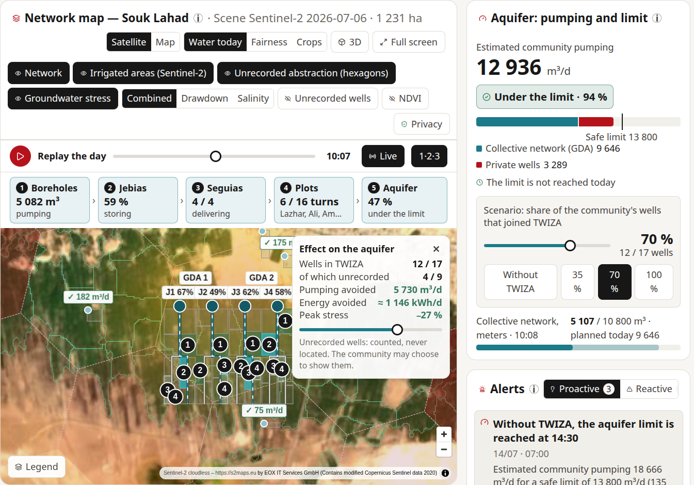
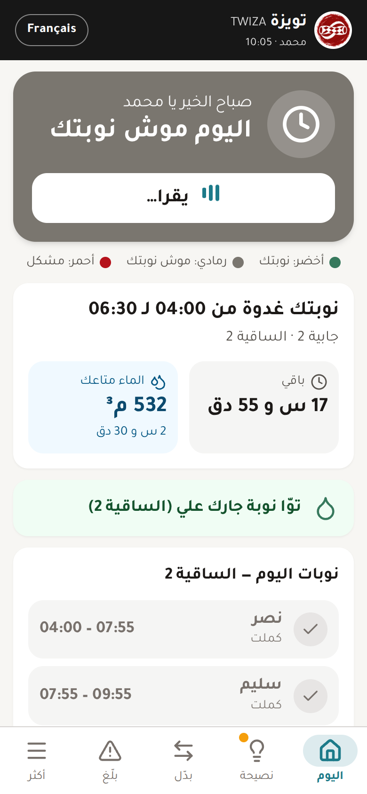
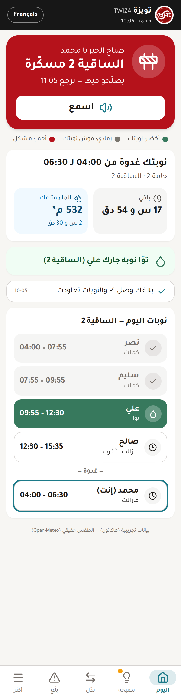
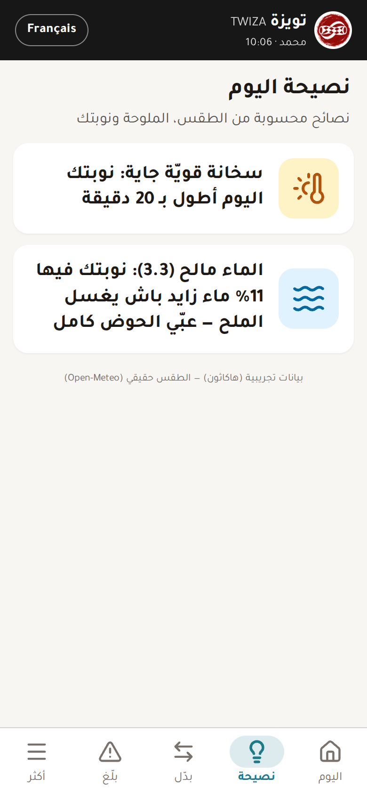
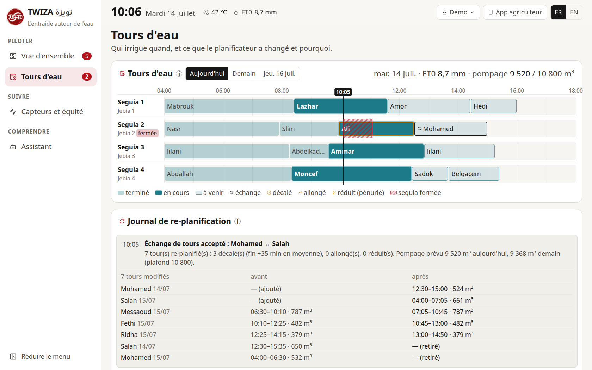

Community water sharing for the oasis of Souk Lahad (Kebili): every farmer knows their water turn, every crop gets the water it needs, and total pumping stays under a safe limit for the aquifer.
Twiza is the collective effort of Tunisian villages: people gather to help each other harvest the crop, build a house, clean the canals. TWIZA applies the same idea to water. Japan knows it too: farmer-run Land Improvement Districts (土地改良区) have shared canal water for generations, by rotation in dry years (番水, bansui). Twiza and kizuna (絆, the bond between people) name the same thing.
Project report · 22 November 2026 · Prototype built during the KIZUNA 2026 hackathon. All community data is synthetic; the weather (Open-Meteo) and the satellite imagery (Sentinel-2) are real.
From 35 % over the aquifer's safe limit to 6 % under it when 70 % of the community's wells join (simulation: 18,666 → 12,936 m³/day, safe limit 13,800).
−19 to −31 %water pumped, depending on how wasteful today's practice is assumed to be
Same crops, 17 % less water95 % of crop need covered, like a fixed nouba in the same week
71 % vs 60 %of need for the worst-off farmer in a week with a power cut
≈ 1.1 MWh/dayof pumping energy avoided at 70 % adoption
Simulation results on a synthetic pilot community (40 farmers, 63 plots, 17 wells) with real July 2026 weather. They are not field measurements. Reproduce with npx tsx data/baseline.ts.
1The problem
Souk Lahad is an oasis delegation near Chott el Jerid. Farmers grow date palms (Deglet Nour) with vegetables and alfalfa underneath, on water from the Complexe Terminal aquifer, which is over-pumped and getting saltier.
Turns are fixed and on paper. The traditional nouba gives each farmer a fixed time on the canal. It does not follow the weather, the crop or the salinity, and it is often felt as unfair.
Nobody sees the aquifer. No one in the community knows how much is pumped in a day or how close that is to what the aquifer can sustain.
Many private wells are unrecorded. Their owners pump outside any coordination and avoid anything that looks like monitoring, for fear of fines.
Failures are handled by word of mouth. A broken canal or a dry well leaves some farmers without water and nobody re-organises the day.
Objective. Group the farmers of one community, orchestrate who irrigates when, give each farm the right water for its crops, keep total pumping under a safe daily limit, and bring the owners of unrecorded wells into the same system with a path to regularization.
2How we solved it
The water network is modelled as a graph of three kinds of infrastructure: wells (the GDA's collective boreholes and private wells), jebias (storage basins) and seguias (canals, concrete mains and earth branches). On top of it sit four parts.
Part
What it does
Farmer app mobile PWA
Tunisian Arabic (derja), right to left, French toggle. Big icons, colour codes (green = your turn, grey = not your turn, red = problem), a listen button. Screens: today, advice, swap my turn, report a problem, my well, regularization helper, SMS preview.
Community dashboard desktop, FR / EN
Map of wells, jebias, seguias and plots on a Sentinel-2 basemap; replay of the day; Gantt of turns; aquifer gauge with a scenario slider; proactive and reactive alerts with the decision taken; KPIs; assistant.
Water planner deterministic, tested
Computes every turn from crop need, salinity, canal losses, storage and the aquifer limit. Re-plans when something changes and logs what changed and why. It is not a language model.
Satellite pipeline Python
Finds irrigated land on a real Sentinel-2 scene (NDVI), estimates its water use and compares it with the registry of recorded wells.
The chain, from borehole to aquifer
1 Boreholespump only what the day's plan needs, never more than the cap
2 Jebiasstore the water overnight and buffer the day
3 Seguiascarry one turn at a time; seepage and travel time are counted
4 Plotsreceive the volume their crops need, in a known order
5 Aquifertotal pumping is checked against the safe daily limit
The planner's rules
Need (FAO-56):need = Kc × ET0 × area ÷ efficiency, palms and understory crops separately, with the forecast ET0 of the next three days.
Salinity (FAO-29): a leaching share LR = ECw / (5·ECe − ECw) is added when the water is salty.
Hydraulics: borehole flow, jebia storage, seguia capacity, seepage per km and travel time.
Aquifer, two numbers: the safe limit for the whole community is 13,800 m³/day. Inside it, the collective network (the GDA's boreholes, the part the planner controls) has its own cap of 10,800 m³/day; the rest is the room left for private wells pumping their crop need. The planner never exceeds the 10,800.
Community rule: palms first (they must survive), then any shortage is shared evenly by everyone.
Re-plan: a farmer report, a sensor anomaly, a swap or a forecast change triggers a new plan; turns already finished never change.
The AI layer around the planner is deliberately modest: explainable anomaly detection on sensor series (sudden level drop, rising salinity, leak by mass balance), rule-based advice phrased in derja and French, and an assistant that can read the data but can only propose changes; the planner decides.

The map and the aquifer gauge with 70 % of wells joined: chain from boreholes to aquifer, order of the turns on the plots, recorded wells with their pumping, effect on the aquifer.
3What a farmer and the committee see

Today: "not your turn", next turn tomorrow 04:00–06:30, the neighbour irrigating now.

After a report: the canal is closed for a check and the day is re-planned.

Advice in derja: the heat wave makes the turn 20 minutes longer.

Turns of the day per seguia, with the canal closure, the swap between two farmers and the re-plan log (before and after for every turn).
4How efficient it is
All figures below come from the running prototype on the synthetic pilot community, on the demo day of 14 July 2026 (real weather: 42 °C, ET0 8.7 mm).
Aquifer
Share of wells in TWIZA
Wells joined
Community pumping
vs safe limit (13,800 m³/day)
0 % (today, no coordination)
0 / 17
18,666 m³/day
135 %
35 %
6 / 17
14,566 m³/day
106 %
70 %
12 / 17
12,936 m³/day
94 %
100 %
17 / 17
12,082 m³/day
88 %
At 70 % adoption the community pumps 5,730 m³/day less (−31 %) and passes under the safe limit. In the table the limit is respected from 60 % adoption (97 %).
The peak of the groundwater stress index falls by 27 %. Without coordination the daily limit is reached at 14:30; at 70 % it is not reached.
Does the result depend on the baseline we chose? Yes, so we tested it
"Today's practice" is an assumption: fixed collective turns deliver 1.3 × the real need and a private well pumps 12 h/day. The table shows the saving at 70 % adoption under milder assumptions.
Collective turns today
Private wells today
Pumping today
vs safe limit
With TWIZA at 70 %
Saving
1.3 × need (reference)
12 h/day
18,666
135 %
12,936
−31 %
1.3 × need
8 h/day
16,624
120 %
12,317
−26 %
1.15 × need
12 h/day
17,219
125 %
12,936
−25 %
1.15 × need
8 h/day
15,177
110 %
12,317
−19 %
1.0 × need (turns already exact)
8 h/day
13,730
99 %
12,317
−10 %
With a much milder baseline (1.15 × and 8 h/day) the community is still over the limit today and still passes under it with TWIZA, saving 19 %. Even if collective turns already matched the need exactly, sizing private pumping to the crop saves 10 %.
Crops and fairness, against a traditional fixed nouba
We replayed the same seven days, power cut on both boreholes included, under a model of the paper nouba: same order, fixed clock slots sized once for the season at 1.3 × the need, no re-planning (a slot without water is lost).
Same week, collective network
Crop need covered
Fairness (Jain index)
Worst-off farmer
Water released
Traditional fixed nouba
95.2 %
0.986
60 % of need
70,626 m³
TWIZA planner
95.0 %
0.990
71 % of need
58,777 m³ (−17 %)
TWIZA covers the same share of crop need with 17 % less water. It does not make crops better off than a generous fixed turn; it stops the over-delivery.
The fairness index is Jain's index over each farm's share of need received (1 = everybody equal). During the power cut TWIZA gave every affected farmer the same share (palms 62 %, understory suspended); under fixed slots the farmers whose slot fell in the outage lost it. The worst-off farmer ends the week at 71 % of need instead of 60 %.
Canal losses are visible for the first time: 5.3 % of the water released, 509 m³ on the demo day.
Energy
Pumping one cubic metre takes about 0.19 kWh here (lift of about 35 m including drawdown, pump and motor efficiency 50 %; both assumed). The 5,730 m³/day avoided at 70 % adoption are therefore about 1.1 MWh per day, around 130 MWh over a 120-day summer, taken off the grid in the season when it fails. The planner also fills the jebias at night, so the canals keep running through a daytime power cut.
Resilience
Event
What the system did
Farmer reports "no water"
Canal closed 60 min for a check, the two remaining turns shifted by 60 min, volumes kept, the farmers concerned notified.
Two farmers swap turns
Slots exchanged, each keeps their own volume, the planner re-checks the limit.
Heat wave forecast (+20 % ET0)
Turns lengthened; palms served at 100 %, understory at 65 %; the collective network stops exactly at its own 10,800 m³ cap (inside the 13,800 community limit).
Borehole dry
Remaining turns served from the jebias and the other borehole; next day palms 83 % for everybody, understory suspended.
Verification
21 automated tests pass: the limit is never exceeded, palms are served first, shortages are spread evenly, a swap keeps volumes, a re-plan never changes the past, and the anomaly detector finds exactly the three planted events.
The 8-step demo script is replayed in a headless browser against the running app: 21 checks pass.
The satellite pipeline ran on a real scene (Sentinel-2, 6 July 2026, 0.7 % cloud): 1,231 ha of irrigated land detected around Souk Lahad.
5Unrecorded wells and regularization
The synthetic community has 15 private wells: 6 recorded and 9 unrecorded. TWIZA treats them as part of the solution: a well that joins is told how long to pump for its crop instead of pumping all day, and the owner gets a checklist to regularize (as described in the project brief: law of 27 October 2026, wells dug before 10 December 2024, flat 3,500 TND, deadline 31 December 2027, implementing rules still pending).
Privacy first. By default the dashboard never places an unrecorded well on the map: the committee sees how many have joined, their total pumping and the effect on the aquifer, and the satellite layer is aggregated on hexagons of about 0.7 km². This is what lets their owners join without fear. Showing them on the map (red, turning green when they join) exists as an option the community can choose to switch on; it is off in the demo. Until that switch is turned on, the server does not send those wells to the dashboard at all; an automated test suite checks every community endpoint for it.
6Limits
Synthetic community. Farmers, plots, wells, sensors and incidents are generated. The results show that the method works on a plausible community, not what it will save in Souk Lahad.
Chosen limits and baselines. The safe daily limit (13,800 m³/day), the "traditional" over-pumping and the model of the fixed nouba are assumptions; section 4 shows how the results move with them. A real limit needs a hydrogeological study.
Energy. The kWh figure uses an assumed lift and efficiency, not a metered pump.
Stress map. It is an index, not a groundwater model.
Satellite. NDVI shows vegetation, not wells; the water estimate uses assumed crop coefficients; the registry it is compared with is synthetic.
Not run: the Claude-powered assistant and advice rewriting compile but were not exercised, because no API key was available. The demo uses the templated answers.
No real SMS, no login. The SMS screen is a preview and the farmer picker is a demo control.
7Next steps
Who runs it: the GDA itself. It already manages the turns and collects the water fee; the CRDA would be the technical partner for the meters and for setting the safe limit.
Pilot: one GDA in Souk Lahad for one irrigation season, with real plots and meters on its boreholes (the planner already consumes sensor series).
Reach: an SMS gateway and Arabic voice so farmers without a smartphone get their turn.
Calibrate: set the safe limit with hydrogeologists and replace the assumed crop values with field data.
Run it: npm install && npm run dev in the project folder, then open http://localhost:5173/ (dashboard) and /farmer (phone app). Details and all assumptions: README.md, section "Hypothèses".